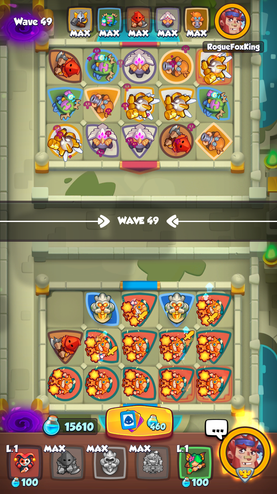
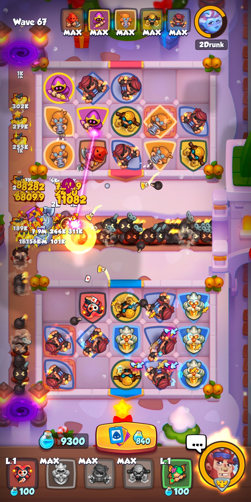

Tips and Tricks
- In this guide I will refer to buff units such as Knight Statue, Banner, Grindstone, Hex, etc... as "buff buildings".
- Being "stuck" means to have a full board/field and no merge options.
General tips
- If you have a choice, and they have damage dealers next to them, mana level up your buff buildings first.
- Do not mana level up slowing units in the early stage of the game, they are not needed so early.
- Remember that the Tribunal boss on wave 50 will downgrade half of your units. You can start saving mana from about wave 40+ to fill in the gaps when this happens.
- Tribunal on wave 50 downgrades half of your units, rounded up. She will downgrade 8 units if you have 15 on the field, but only 7 units if you have 14.
- Tribunal can disconnect your Engineers on wave 50 if you are not ready. Try to have them above tier 1 to avoid this.

- At the beginning of the game it is not efficient to mana level up a single unit to max, it's better to put down more units first.
- Remember to have your hero ability ready if you need to use it on a mini-boss or boss wave.
- Check and reset the shop often for legendary units. Play a lot to gain gold because you need 40K to buy a legendary. I recommend having more than 40K gold available because it's possible to get back to back legendaries.
- In the shop you should buy every legendary available, if possible. Even if you don't plan on upgrading that unit, you can convert it to a Crystal for upgrading other units.
Team composition tips
- You should not need more than 1 or 2 good damage dealers per team. The rest of your team should support your damage dealers.
- You should not need more than 1 mana generator on your team. For example Cauldron, Vampire or Demonologist. Some teams don't need a mana generator.
- You should not need more than 1 buff building on your team, it can be overkill or tough to manage 2. Crystalmancer works okay without any buffs(must be spammed).
- Try to avoid running 2 units that need to be spammed because you might not be able to place enough of them on the field. Examples of units that need multiple copies of themselves are Crystalmancer, Cultist, Engineer, Trapper, Stasis, etc...
- To avoid getting stuck with no merge options you can run units like Mime, Harlequin, Dryad, etc...
- To remove the debuff you get from copying damage units with Harlequin, you can switch said unit with a Portal Keeper on the field.
- You can run Harlequin to copy a Knight Statue when needed. Save mana before placing more units in case you mess up your Statue count.
Merging tips
- In general, you can safely merge units that are not next to a buff building since they are usually weak.
- In the early waves, there is usually no need for slowing monsters. You can merge units like Cold Mage and Frost.
- Do not merge everything you see, it's usually better to have multiple low tier/level units than just 1 high tier merged unit.
- When you have a full field/board, I recommend merging the lowest tier units first and working up from there. This way you minimize the risk of getting stuck with no merge options.
- When running Knight Statue, it's a good idea to have a Harlequin ready to copy a Statue in case you need to.

Position setup tips
- In general, avoid having a buff building in a corner. They can only buff 2 units there.
- A buff building in the middle of each wall will cover your entire field.
- Most damage dealing units are pretty weak when not next to a buff building.
- Certain support units such as Chemist and Executioner only require 1 of them on the field to be effective. Watch out for the Warlock boss ability though.
- Look at your teammate's setup, if for example they have 1 or more high level Chemist or Executioner on the field, there is less pressure for you to have 1 too.
- Certain support units such as Trapper, Cold Mage and Frost can stack their effect, so you may want to have more than 1 on the field for later, tougher waves.
- Some units need multiple copies of themselves in order to work well: Crystalmancer, Cultist, Engineer, Trapper, etc... The more copies the better, even if they are just tier 1.
When you are supporting:
- Do not merge Shaman from the get-go, allow your teammate to set up their board. Use this time to produce mana and upgrade units if needed.

- You may wait for your teammate to emote signal you that it's okay to merge Shaman. He/she may also signal you to stop merging. - The Bedlam boss on wave 30 can be a huge problem for a Demon Hunter deck if you have not upgraded a couple of their DH to tier 7 by then. - Remember that the Tribunal boss on wave 50 will downgrade half of your teammate's cards. You should have saved mana to level them up again whenever this happens. - It's better to merge a Shaman with a Mime than with another Shaman, you get more merges this way. - Summoner is there to keep Shaman on the board, there is no point in using Summoner just to upgrade your cards since the higher their level the harder it is to merge.
- You may wait for your teammate to emote signal you that it's okay to merge Shaman. He/she may also signal you to stop merging. - The Bedlam boss on wave 30 can be a huge problem for a Demon Hunter deck if you have not upgraded a couple of their DH to tier 7 by then. - Remember that the Tribunal boss on wave 50 will downgrade half of your teammate's cards. You should have saved mana to level them up again whenever this happens. - It's better to merge a Shaman with a Mime than with another Shaman, you get more merges this way. - Summoner is there to keep Shaman on the board, there is no point in using Summoner just to upgrade your cards since the higher their level the harder it is to merge.
When you are being supported:
- Try not to fill the board from the get-go since it is very hard to upgrade your units to tier 7 when you do this.
- Do not focus on producing tons of mana, your Shaman support teammate will upgrade your units for you.
Boss wave list:
You will notice a pattern here, after wave 60 the bosses appear every two waves in this order: Tamer - Gorgon - Bedlam - Warlock - Tribunal - Puppeteer. In between each boss we get either a Bannerlord or Vortex(B/V). I have presented up to wave 90 here but you can easily predict which boss is next if you follow the pattern.